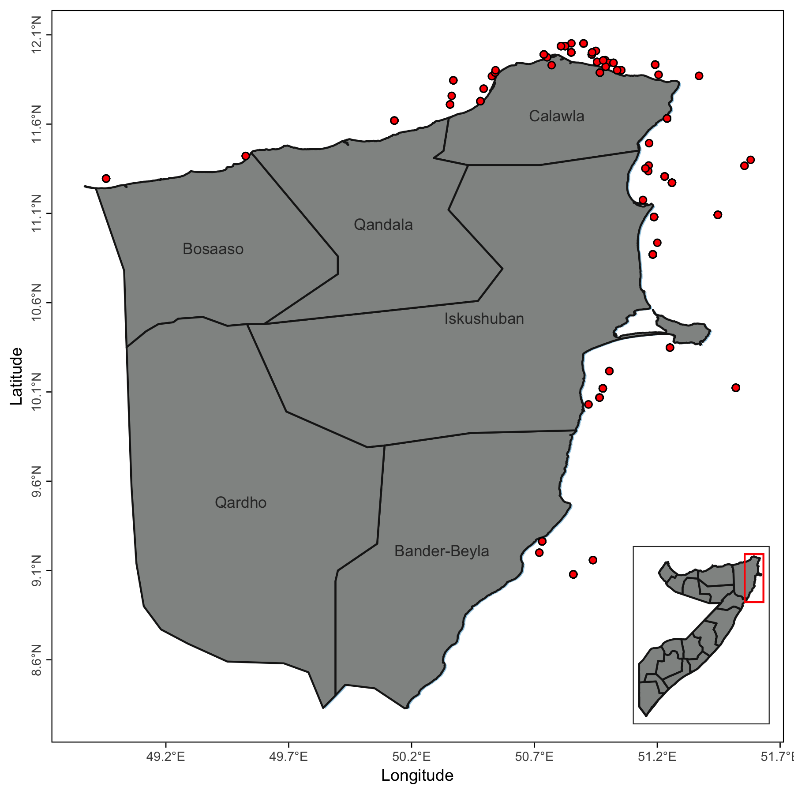

Blog · Data science
Data science
Maps and analyses I build to plan fieldwork and understand fishing in Somalia's coastal waters.
Field-site maps
I use map-based tools to plan field activities and keep track of sampling locations. Tap a map to open it full size.


You can also explore the interactive Bari region map on RPubs.
Fishing effort
A preliminary analysis of fishing effort in Somali waters. Results will be posted here when the analysis is complete.
Analysis progress65%